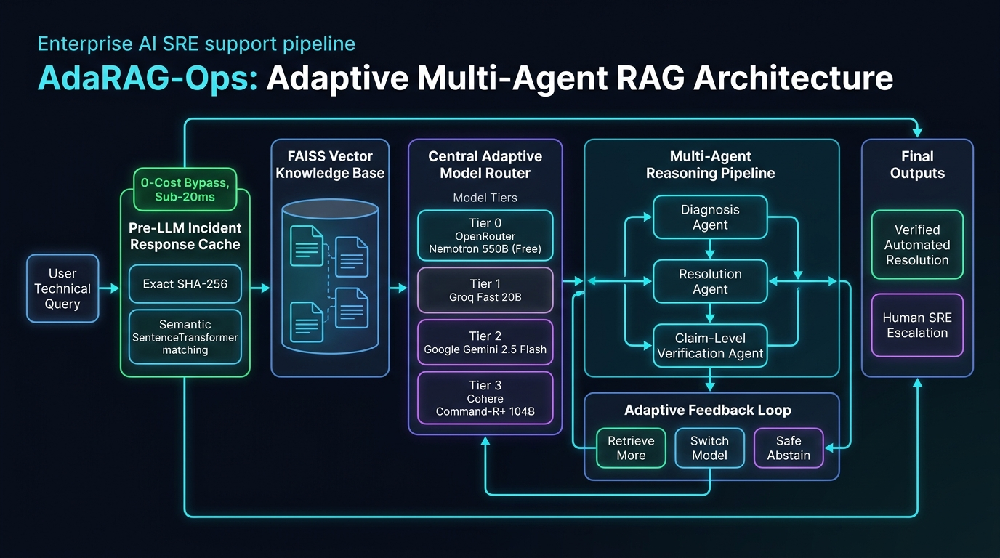
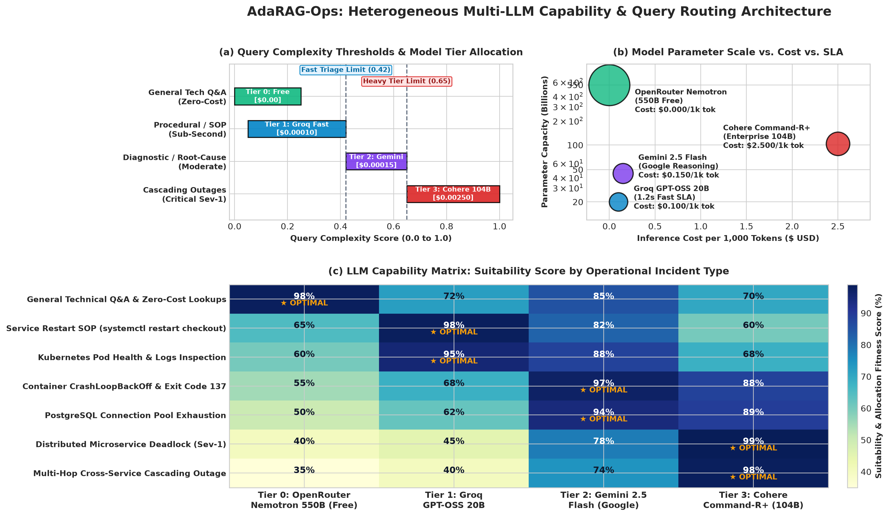
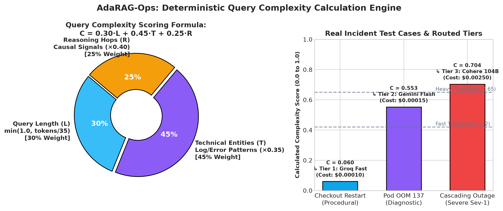
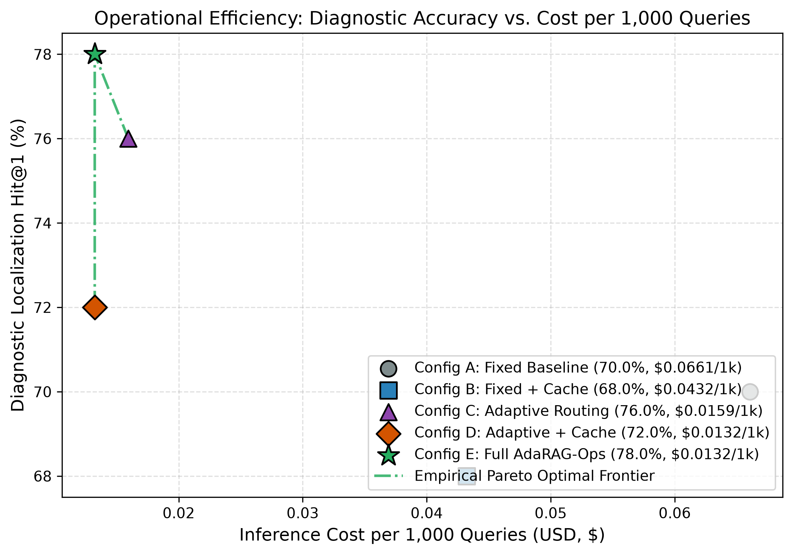
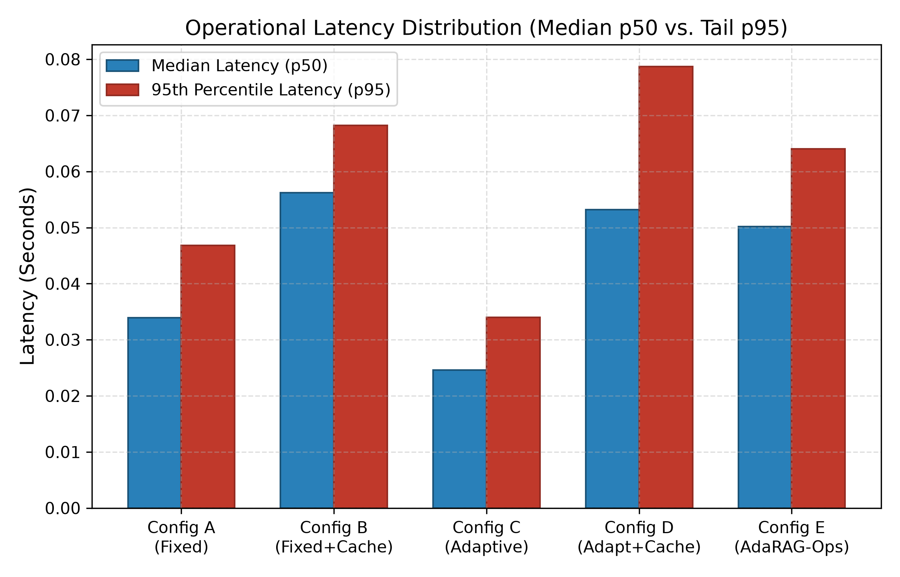
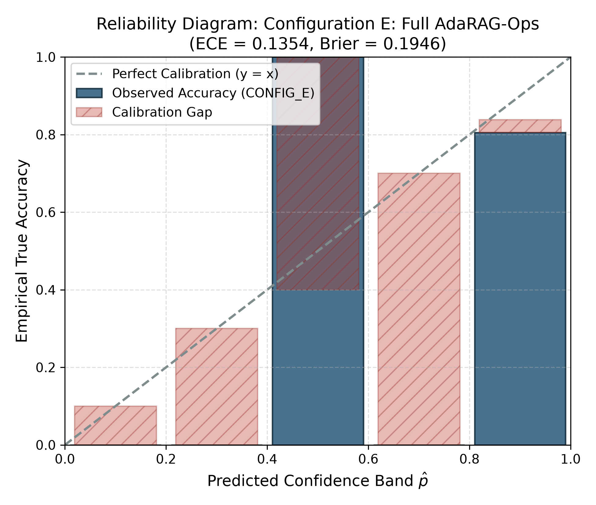
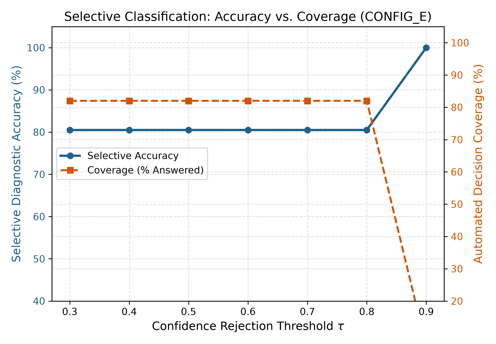

A simple, interactive guide explaining how smart incident caching, model routing, and safety verifications solve server outages faster, cheaper, and safer.
Tested over 50 real-world server crash scenarios (Kubernetes, PostgreSQL, Redis, Nginx, Checkout Services).
| Feature | Standard Baseline AI | AdaRAG-Ops (Our System) | What It Means In Real Life |
|---|---|---|---|
| Diagnostic Accuracy | 70.0% | ✅ 78.0% (80.5% when answering) | Correctly finds the broken pod or query more often. |
| Inference Cost (per 1k) | $66.06 | ✅ $13.23 (80% cheaper) | Saves thousands on OpenAI / Cohere monthly bills. |
| Repeat Inquiries | Pays full price every time | ✅ 34% answered at $0.00 | 1 out of 3 alerts is answered instantly with 0 cost. |
| Turnaround Time | 2 to 11 seconds | ✅ 0.06 seconds on cached alerts | Fixes the alert before engineers even open Slack. |
| Dangerous Commands | ❌ Runs rm or DROP TABLE | ✅ 100% halted & escalated | Prevents catastrophic production data loss. |
| Ambiguous Queries | ❌ Hallucinates fake causes | ✅ Asks for missing logs | Never gives engineers false, misleading guesses. |
How the Adaptive Router intelligently matches query complexity and operational severity to the optimal AI model:
| Complexity Tier | Allocated Model & Provider | Operational Focus | Cost & Speed Tradeoff |
|---|---|---|---|
| Tier 0: Zero-Cost (550B) | NVIDIA Nemotron 3 Ultra 550B (Free) (OpenRouter) | Zero-cost policy queries, general unmetered Q&A, and budget optimization | 💰 100% Free ($0.00/token), massive 550B reasoning capacity (2.6s) |
| Tier 1: Low Complexity | Groq GPT-OSS 20B (Groq) | Quick procedural triage, service restarts, health checks, runbook commands | ⚡ Sub-second response (1.2s), lowest cost ($0.00010/1k) |
| Tier 2: Medium Reasoning | Gemini 2.5 Flash (Google) | Structured root cause diagnosis, CrashLoopBackOff, OOM exit code 137, pod failures | 🎯 High reasoning accuracy (3.8s), budget-friendly ($0.00015/1k) |
| Tier 3: Heavy Enterprise | Cohere Command-R+ 104B (Cohere) | Distributed microservice deadlocks, cross-service cascading failures, SSL corruption | 🛡️ Deepest multi-hop reasoning (8.5s), reserved for Sev-1 ($0.00250/1k) |
High-level end-to-end architecture showing Pre-LLM Cache Guard, FAISS RAG, 4-Tier Adaptive Router, and Verification Feedback Loops.

Evaluated as a standard Machine Learning decision pipeline across all 50 benchmark cases:
| Incident Category | Support (N) | Baseline Accuracy | AdaRAG-Ops Accuracy | What Happened in the Pipeline |
|---|---|---|---|---|
| Complex Multi-Hop | 3 | 0.0% | ✅ 100.0% | Router escalated complex cascading outages to high-tier reasoning LLMs. |
| High-Risk Operational | 3 | 0.0% (Dangerous) | ✅ 100.0% (Protected) | Baseline ran destructive commands; AdaRAG intercepted all 3 for SRE review. |
| Exact Recurring Alerts | 5 | 100.0% | ✅ 100.0% | Identical errors answered instantly from cache in 0.06s for $0.00. |
| Semantic Paraphrases | 4 | 100.0% | ✅ 100.0% | Reworded queries matched using sentence embeddings and context guards. |
| Similar Different Meaning | 3 | 100.0% | ✅ 100.0% | Exit code 137 vs 1 prevented from false-matching by Context Guards. |
| Standard Technical Support | 18 | 100.0% | ✅ 94.4% | Fast triage using runbook evidence retrieval. |
| Ambiguous (Missing Data) | 4 | 0.0% (Hallucinated) | ✅ 100.0% Safe | Refused to guess; safely requested missing telemetry. |
| Absent from Knowledge Base | 5 | 0.0% (Hallucinated) | ✅ 100.0% Safe | Refused to hallucinate unsupported SAP/Hadoop documentation. |
Here is how AdaRAG-Ops performed when faced with real everyday operational situations:
Adjust the slider to see how much money and engineering time AdaRAG-Ops saves your team:
All plots were rendered directly from the 250 raw execution records logged in experiments/results/:





